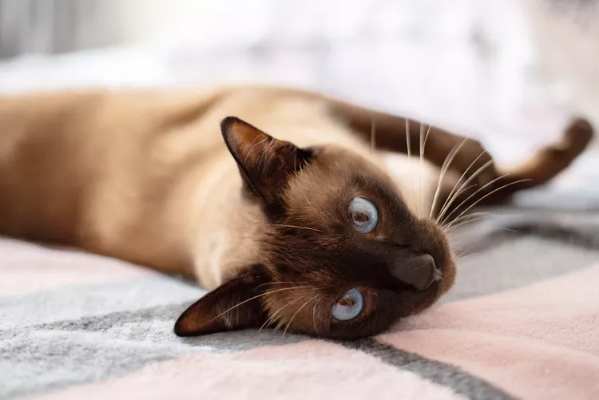

Bonjour, je m'appelle Amadou. Je suis un étudiant-athlète au Cégep Lionel-Groulx. Avant cela, mes journées se limitaient à aller à l'école, au travail ou à mes entraînements. Tout a changé avec l'arrivée de mon chat en mars. Sa présence a été très appréciée, car elle m'a apporté un compagnon affectueux et énergique. De plus, cela m'a donné quelque chose d'autre auquel penser et me préoccuper, ce qui est vraiment agréable. Le fait d'avoir un animal de compagnie a mon avis a été un experience trés enrichissante à date, car elle te permet d'ameliorer ton sens de la responsabilité vu qu'une vie depend de toi.
Mes Coordonnées
Adresse :283 Rue Ernest-Bourque
Blainville, QC J7C 0C7